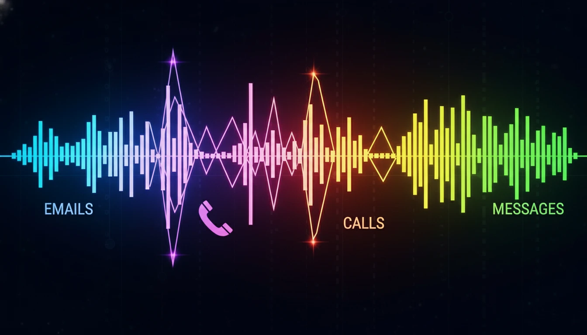

What is a Sales Cadence? The Ultimate Guide to Prospecting (2025)

Sending one email and hoping for a reply isn't a strategy—it's a wish. In modern sales, it takes an average of 8 touchpoints just to get a prospect's attention. If you don't have a plan for those 8 touchpoints, you're just making noise.
This is where a Sales Cadence comes in. It is the systematic framework that turns chaotic prospecting into a predictable revenue machine.
What is a Sales Cadence?
A sales cadence (or sequence) is a scheduled series of touchpoints used to engage a prospect. It dictates when you reach out, how you reach out (email, phone, LinkedIn), and what you say.
The goal is simple: to stay top-of-mind without being annoying, until the prospect either books a meeting or tells you "no."
The Anatomy of a Perfect Cadence
A successful cadence is multi-channel. Relying on just one channel (like email) is a recipe for failure. Here is a proven 14-day structure:
Day 1: The Triple Tap
Hit them on three channels at once to maximize visibility.
- Email 1: Short, personalized, and focused on a specific problem.
- LinkedIn: Send a connection request (blank or with a low-pressure note).
- Phone: Call and leave a voicemail referencing the email.
Day 3: The Value Add
Don't ask for anything yet. Give them something.
- Email 2: "Saw this article/report and thought of you." No ask.
- LinkedIn: Engage with their recent post (comment/like).
Day 6: The Follow-Up
- Phone: Call again (no voicemail this time).
- Email 3: Thread this to the first email. "Any thoughts on my previous note?"
Day 10: The Break-Up
If they haven't responded, send a "break-up" email. "I assume this isn't a priority right now, so I'll stop reaching out." Paradoxically, this email often gets the highest response rate.
Best Practices for 2025
- Personalization at Scale: Use tools to insert custom fields, but manually write the first sentence of every email.
- Video Prospecting: Embed a 30-second Loom video in your email. It humanizes you and increases click-through rates.
- Don't Be a Robot: If you sound like a template, you will be deleted. Write like you talk.
Conclusion
A sales cadence brings discipline to your prospecting. It ensures that no lead is left behind and that every prospect gets a consistent, high-quality experience. Build your cadence, test it, and watch your meeting book rate soar.
Need help managing your leads? Learn about Lead Generation strategies.